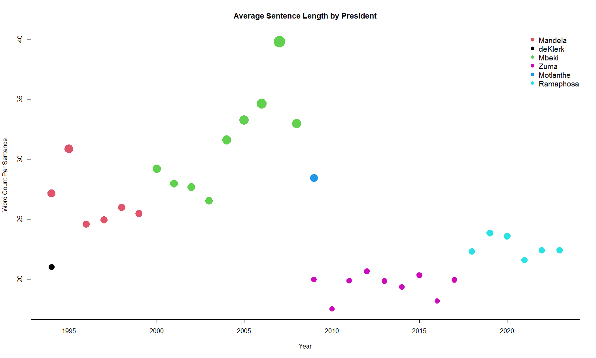

STA5073Z, Data Science for Industry: Assignment 1
Abstract
SONA. Build, train and fit predictive models that take sentences as input and aim to classify the sentences by which president said them. Use different ways of formatting and encoding the data and compare the performance of a variety of models including…
Introduction
The State of the Nation Address (SONA) is an important annual event in political calendar. It provides the President of South Africa the opportunity to report on the status of the nation to a joint sitting of the two houses of Parliament, the National Assembly and the National Council of Provinces, and the country’s population at large. The address outlines the government’s agenda, priorities, and policy objectives for the upcoming year. The address will often include a reflection of country’s progress and policy performance since the previous address (South African Government, 2023). In the years in which an election is held, the SONA occurs twice, pre- and post-elections.
This report aims to compare and validate the performance different methods and models that aim to classify sentences into their respective sources. Both bag-of-words and term frequency-inverse document frequency (TF-IDF) models will be used. The models used include naive and uniform classification models, a boosted tree classifier, and standard feed-forward neural networks, also referred to as a multi-layer perceptron.
Literature Review
The following section will contain a brief exploration of the existing literature on the models used for this task. The uniform and naive models will serve as baselines for comparison against which the other models can be judged.
The first of the non-naive models is the decision tree model. Decision trees are a common model for classification that is known for its interpretability as the inputs are segemented at each node based on some decision rule. The implementation in this report is based on Breiman et. al (1984). For a data set of this dimensionality, decision trees are likely to suffer in terms of performance and accuracy. Ensemble learning techniques combine multiple individual models to create a more robust and accurate model by leveraging the varaince between the underlying individual models. This report goes on to explore boosted trees. This model combine many weak decision trees in sequence such that the model can correct misclassifications in subsequent iterations. Extreme Gradient Boosting, introduced by Chen et al. (2016) is highly scalable and efficient in handling large data sets. It leverages a gradient boosting framework to optimize the loss function.
Multi-layer perceptrons are the archetypal neural network consisting of an input layer, a series of hidden layers, and an output layer combined with biases and activation functions that allow the model to capture non-linear relationships and produce output in a format and structure that is useful for prediction. This capacity for complex non-linearity gives neural nets the ability to capture linguistic nuances and speaking styles that may be challenging for simpler models like decision trees (Schmidhuber, 2015). The hyperparameterisation of neural networks offers a lot of flexibility in modelling complexity as the user can control the layer sizes, activation functions, and training algorithms to optimize performance in the authorship attribution task (Mikolov et al., 2013).
Data Exploration
The data set contains thirty-six SONA speeches from six different president between 1994 and 2022. There are 9 345 sentences comprised of almost 12 000 unique words. Figure 1 gives a visual representation of the length of the presidents’ sentences over the years. One can see that Mandela, Mbeki, and Motlanthe spoke in significantly longer sentences relative to de Klerk, Zuma, and Ramaphosa.

Methodology
The data is read in from an external repository. The dates are modified to a uniform format and the dates and presidents’ names are used to differentiate the speeches. The date is removed from start of each speech. Punctuation and other unwanted characters are removed. The speeches are then split into sentences, each sentence is given an ID and the word count is calculated. Any sentence of two or less words is discarded. The sentences are then tokenised into words to create a dictionary. The dictionary is then used to generate a sentence-term matrix containing every word in every sentence - this is the bag of words data frame. A second sentence-term matrix is encoded using term frequency-inverse document frequency (TF-IDF) to down-weight words that occur commonly throughout the sentences.
The data is split into training, validation, and test sets. Both the bag of words and the TF-IDF data frames are split 60% training, 20% validation, and 20% testing. The data is split in proportion to the relative number of sentences sourced from each president. This ensures proportional representation of each president in each set and prevents the under-represented presidents from being excluded from one of the data sets.
The most basic baseline models are the uniform and naive models. The uniform model assigns sentences to presidents with equal probability. This model draws no information from the training data and performs identically on the training and validation sets. The naive model assigns sentences to presidents with a probabilty equal to the proportion of the training data contributed by each president. This is the true baseline model for comparison to check whether a model adds predictive capacity beyond a simple guess.
The decision tree model starts with the entire data set at the root node. The algorithm then iteratively splits the data set at each node based on a decision rule. The decision rule chooses a feature or word on which to split the data that maximises the separation of the target classes. This process continues until the tree reaches a threshold depth or a threshold at which further splits would not significantly alter the classification. The terminal nodes give the final classification for data points in its specific subset. These models were implemented using the rpart package. The complexity parameter was allowed to range between 0.001 and 0.5, while the maximum depth was allowed to range between 25 and 100.
The Extreme Gradient Boosting (XGBoost) model creates an ensemble of decision trees starting with a single base tree. The base model has some residual error and new decision trees are built to predict the residuals and are added to the ensemble. Each tree added attempts to correct the prediction of its predecessor. The contribution of each tree is weighted so that trees that correct more errors are more significant. Gradient descent is used to optimise the weights parameters. These models were implemented using the xgboost package. The learning rate scales the contribution of each tree and was allowed to range between 0.1 and 0.7.
The multilayer perceptrons (MLPs) consist of an input layer, a series of hidden layers, and an output layer. The input layer has the dimensionality of the input data - one node per word in the document-term matrix. For each data configuration, a series of hidden layer configurations were evaluated with between one and four hidden layers of 32 or 64 nodes using rectified linear unit (ReLU) activation functions. These activation functions are hinge functions that allow the model to capture non-linearity in the data. The output layer is six nodes using a softmax activation function to classify the outputs into the six classes that identify the presidents. The model was implemented using the keras and tensorflow packages.
The models are trained on 60% of the data, where the models aim to minimise the training misclassifications. The model performances are then assessed using the validation data set to check how different configurations of each model (depth of trees, learning rates, complexity of hidden layers etc) affect the models’ predictive power on unseen data. The best model is selected based on the validation accuracy. The best model is then tested on the saved test data to get an estimate of the model’s real performance on real-world unseen data.
Results
Model results: training, validation and test accuracy
Discussion and Conclusion
Best performing models in training, validation and test scenarios. Discuss model performance and causes - complexity and overfitting.
References
Breiman, L., Friedman, J., Stone, C.J., Olshen, R.A., 1984. Classification and regression trees. CRC press.
Chen, T., Guestrin, C. (2016). XGBoost: A Scalable Tree Boosting System. In KDD ’16: Proceedings of the 22nd ACM SIGKDD International Conference on Knowledge Discovery and Data Mining (pp. 785–794).
Mikolov, T., Sutskever, I., Chen, K., Corrado, G. S., Dean, J. (2013). Distributed Representations of Words and Phrases and their Compositionality. In Advances in Neural Information Processing Systems 26 (NIPS 2013).
Schmidhuber, J. (2015). Deep learning in neural networks: An overview. Neural Networks, 61, 85-117.
South African Government. 2023. “State of the Nation Address 2023.” Available at: https://www.gov.za/SONA2023 (Accessed 2023-10-08).